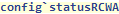
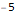
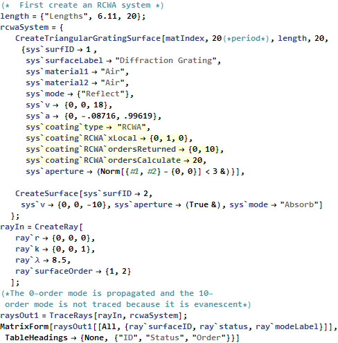
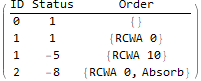

| CONFIG` SYMBOL |
config`statusRCWA
| config`statusRCWA A user modifiable configuration parameter of Polaris-M. It is applicable to rigorous coupled wave analysis, and allows the user to decide whether or not rays with imaginary components from an RCWA calculation should continue to propagate. Setting this parameter to +5 will cause rays to continue propagation while -5 will cause evanescent waves to terminate. |

Data Type: Integer (±5)
Default Value: -5
 Basic Examples (2)
Basic Examples (2)
Find out what happens when just config`statusRCWA is entered:


The default status for rays with imaginary RCWA components to stop propagating.
Trace two ray the 0 order and the 10th order



 • •
• •  • •
• •  •
•  •
•  •
•  • • •
• • •  •
•  •
•  •
•  •
•  •
•  • •
• •  •
•  •
•